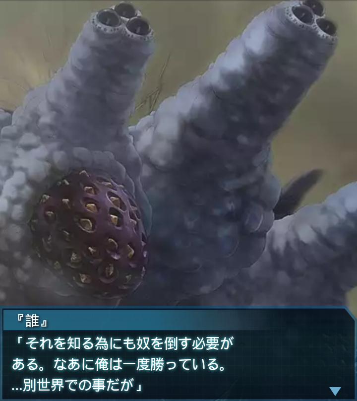

篁唯依
「た、大尉…あれは何ですか！？見たこともないＢＥＴＡです！」

『誰』
「や、やはりあれは…俺は奴に見覚えがある。俺は…別の世界で
あれと戦っている！」
『誰』
「桜花作戦当時、陽動作戦が行われたエヴェンスクハイヴに出現した、
新種の話は知っているか？」
篁唯依
「この世界の桜花作戦ですね？はい、話には…という事は、あれが
その新種…！？」
『誰』
「そうだ！光線級と要塞級を足したような…絶望的に手強い奴だ…」
篁唯依
「まさか、想定よりＢＥＴＡの数が少なかったのは…これを生み出す
為だったというのですか――？」
篁唯依
「だが何故だ？私達が降下中にレーザーを撃たれたら、ひとたまり
もなかったのに…」
『誰』
「ＢＥＴＡの行動は理解不能だが、それは確かに理に適っていない。
何か理由がありそうだ」

『誰』
「それを知る為にも奴を倒す必要がある。なあに俺は一度勝っている。
…別世界での事だが」
『誰』
「各機、奴は無数の衝角を射出して攻撃してくる。かわしながら近づき
一気に叩く！」
篁唯依
「――了解！」『誰』
「行くぞッ！！」